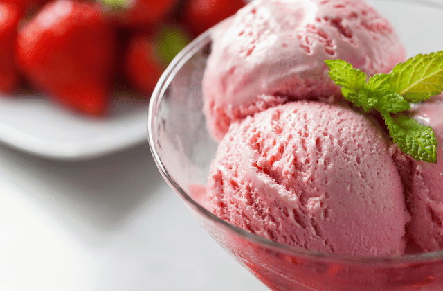

Esse sorvete por ser leve demais não deixa aquela camada de gordura na boca, por isso a gente pode se jogar na alegria!
Já testei várias receitas de sorvete, mas essa é a que mais se aproxima dos sorvetes industrializados em relação à textura, mas isso só vale para quem não tem uma sorveteira.
Fiz de morango porque é o preferido do marido (quando é que esse homem vai adquirir paladar de gente grande, heim?).
Vamos à receita que é bem fácil e rende 1 pote de 2 litros e mais um pote pequeno que deve ter uns 200ml.
Agora utilizaremos a batedeira. Pique a base congelada com uma faca e coloque os pedaços na tigela grande da batedeira. Adicione: